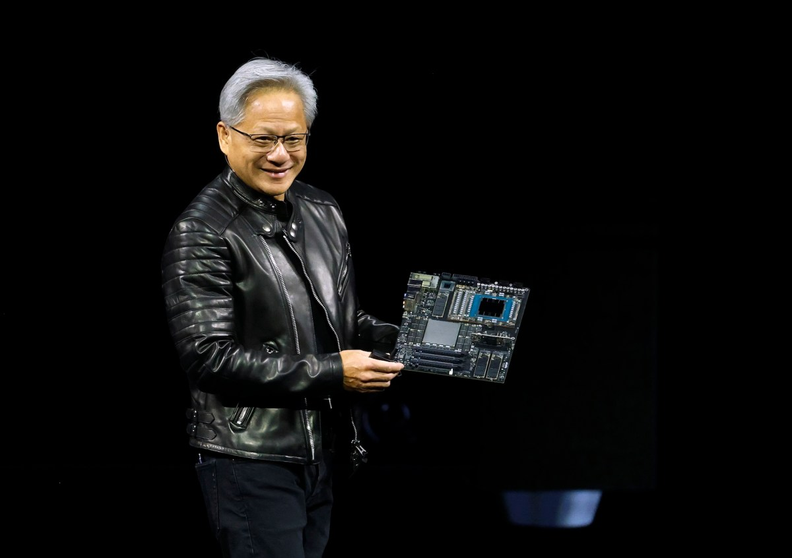
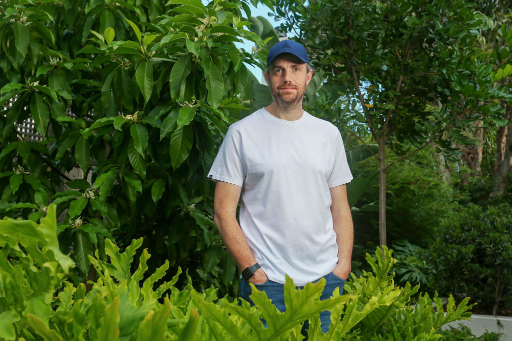
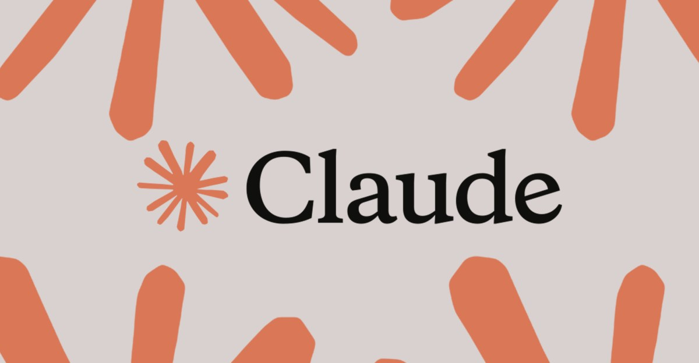
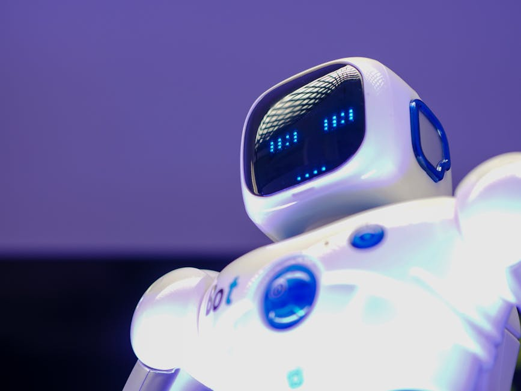
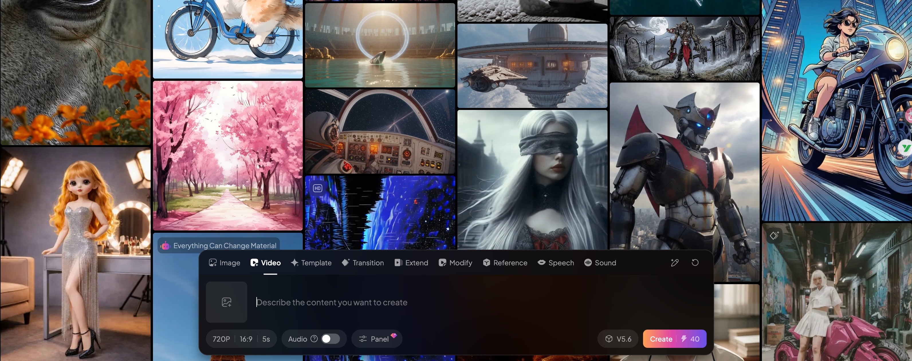
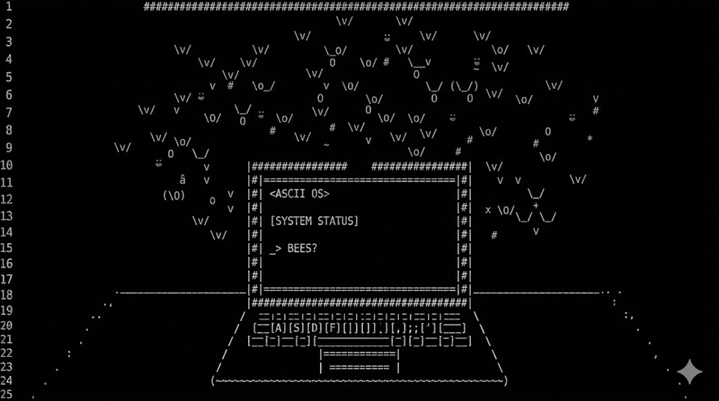

AI DAILY
AI 行业日报
2026年3月13日 · 精选 13 条
01行业动态
NVIDIA GTC 2026下周一开幕，或发布开源Agent平台NemoClaw与推理新芯片

NVIDIA年度GTC开发者大会下周一在圣何塞开幕，黄仁勋将发表两小时主题演讲，聚焦AI与计算的未来。大会覆盖医疗、机器人、自动驾驶等多个垂直领域。
据Wired报道，NVIDIA或将发布开源企业AI Agent平台NemoClaw，以及专攻推理加速的新芯片。此外，NVIDIA去年以200亿美元授权费引入Groq推理技术，Groq创始人Jonathan Ross等核心成员已加入NVIDIA。
INSIGHT
训练市场80%份额已是既成事实，推理才是下一个十倍市场。NemoClaw如果落地，意味着NVIDIA不再只卖铲子——它要自己开矿了。Groq团队的整合速度，会决定这200亿是投资还是学费。
02人事变动
Atlassian裁员1600人押注AI，继Block之后又一家"以AI之名"砍人

Atlassian宣布裁撤10%员工约1600人，将释放的资金投向AI和企业销售。CEO Mike Cannon-Brookes称软件公司在增长、盈利和速度上的"及格线"已经提高了。
就在几周前，Block的Jack Dorsey以更激进的姿态裁掉近半数员工超4000人，理由是AI可以自动化大量工作。多位企业级VC此前预测2026年AI将对劳动力市场产生实质冲击。
INSIGHT
两家公司、两种裁法，结论一样：AI不是在替代某个岗位，而是在重新定义"一个人能做多少事"的上限。当这个上限翻倍，人头自然砍半。
03产品发布
Claude上线对话内嵌可视化，聊天框正在变成画布

Anthropic为Claude上线内嵌可视化功能，AI在对话中可自动生成交互式图表、图解和数据可视化，直接嵌入聊天流而非侧边栏。功能已向所有用户默认开启。
与此前的Artifacts不同，新可视化是临时的——随对话推进而变化或消失，支持用户即时修改。同一周内，OpenAI和Google也分别推出了类似的交互式可视化功能。
INSIGHT
三家同一周上线几乎相同的功能，说明对话式AI的下一个竞争焦点已经从"能说什么"转向"能展示什么"。文字变成界面，聊天框变成画布——交互方式在悄悄换代。
04市场数据
Google"不排除"在Gemini投放广告，7.5亿月活与4000亿营收撑起底气
Google高级副总裁Nick Fox接受WIRED采访时明确表示"不排除"在Gemini中投放广告，称AI Mode中的广告实验"经验可能迁移到Gemini App"。Gemini月活已超7.5亿，去年3月还是3.5亿。
Google 2025年营收首破4000亿美元，不急于变现Gemini。相比之下，OpenAI计划2026年营收翻倍至600亿以上。Anthropic则在超级碗投放广告警告AI广告化的风险，Perplexity已暂停广告实验。
INSIGHT
7.5亿月活、4000亿营收——Google的底气在于它不需要急。但"不排除"三个字本身就是一种表态：当搜索广告的增长曲线开始弯折，Gemini随时可以接棒。
05产品发布
Gemini任务自动化登陆三星S26，替你叫Uber、点星巴克
Google Gemini的任务自动化功能在三星Galaxy S26 Ultra上正式上线Beta版。用户用自然语言下指令，Gemini在虚拟窗口中操作Uber、星巴克等App完成叫车、点单等任务，关键操作前会暂停等待用户确认。
测试中，叫车到机场的简单指令被流畅执行；点咖啡加牛角包的复杂请求需要更多交互，但Gemini正确选择了热白咖啡，甚至自动勾选"加热牛角包"。一年前这个助手还会在航班信息上和用户争论。
INSIGHT
不是演示视频，是真机实测。Gemini从"帮你搜"到"帮你做"只花了一年，但最关键的不是它做到了什么，而是它在不确定时会停下来问你。这种"知道自己不知道"的能力，才是Agent能上线的前提。
06产品发布
Perplexity发布"Personal Computer"桌面Agent，AI从浏览器搬到操作系统
Perplexity推出"Personal Computer"桌面端AI Agent，运行在Mac Mini上，可直接访问本地文件和应用程序，通过自然语言执行复杂任务。目前处于早期邀请制内测阶段。
与云端版"Computer"不同，Personal Computer强调本地化操作——可远程登录控制、支持多任务追踪。功能定位类似开源项目OpenClaw，但提供了更易用的停靠式界面和任务管理。
INSIGHT
云端Agent回答问题，桌面Agent替你干活——Perplexity正在把AI从浏览器搬到操作系统。邀请制内测的谨慎说明他们也清楚：让AI动你电脑上的文件，信任比技术更难突破。
07产品发布
马斯克官宣"数字擎天柱"AI员工，但巨硬项目已被曝停摆

马斯克在X上宣布数字擎天柱/巨硬（Digital Optimus / Macrohard），定位为能操作电脑屏幕、键盘和鼠标的AI数字员工。项目由xAI与Tesla联合推出，运行在Tesla AI4芯片上——售价650美元，功耗仅为H100的四分之一。
但据Business Insider报道，巨硬项目此前已陷入停滞：负责人前DeepMind工程师Toby Pohlen因进度不满离职，涉及600名外包的数据采集项目暂停，团队经历大规模人员流失。马斯克此次官宣更像是概念继承而非产品发布。
INSIGHT
一边是650美元芯片的宏大叙事，一边是项目负责人离职、外包团队解散的现实。马斯克擅长用发布会的节奏掩盖工程的节奏——但Agent不是火箭，PPT飞不起来。
08融资收购
爱诗科技3亿美元C轮，刷新中国AI视频最大单笔融资纪录

AI视频公司爱诗科技完成3亿美元C轮融资，由鼎晖领投，三七互娱、中国儒意等产业资本跟投，创中国AI视频赛道单笔最大纪录。达到同等融资量级所用时间不到三年，而Runway花了七年。
爱诗科技2023年创立时押注DiT架构做视频生成，是国内首家采用该路线的公司——一年后Sora发布验证了这一选择。旗下产品PixVerse和拍我AI已连续更新8个大版本，训练成本约为同行的10%。
INSIGHT
3亿美元不是重点，"别人选U-Net时我们选DiT"才是这个故事的核心。技术路线的先发优势+产品数据飞轮压低了训练成本——同行花10倍算力追赶的时候，爱诗已经把差距变成了壁垒。
09观点评论
Karpathy：编程基本单元从文件变成Agent，IDE需要进化成指挥中心
AI领域知名研究者Andrej Karpathy在X上发文称，编程的基本单元已从代码文件变为AI Agent。IDE不会消失，但需要进化成"Agent管理中心"——从管理文件升级为调度多个智能体协同工作。
Karpathy提出下一代IDE应具备的功能：一键显示/隐藏Agent视图、实时显示各Agent运行状态、token消耗统计、支持全屏多显示器"指挥中心"布局。他自称80%的代码已由AI生成。
INSIGHT
当Karpathy说"编程单位变了"，他描述的不是未来——而是他自己现在的工作方式。IDE从代码编辑器变成Agent调度台，这件事正在发生，只是大部分开发者还没意识到自己的工具已经过时了。
10技术突破
YC支持的Random Labs发布Slate V1，首个"群体原生"编码Agent

Y Combinator支持的Random Labs正式发布Slate V1，自称业界首个"群体原生"（swarm-native）自主编码Agent。产品由Kiran和Mihir Chintawar于2024年联合创立，目标是服务"下一个2000万工程师"。
Slate V1采用名为"Thread Weaving"的架构——中央编排线程用TypeScript DSL调度并行工作线程，实现策略与执行分离。配合"动态剪枝算法"在大型代码库中维护上下文，突破传统Agent的上下文窗口瓶颈。
INSIGHT
"群体原生"这个词本身就是一种产品定位：不是一个更聪明的助手，而是一支可编程的工程团队。Thread Weaving解决的是Agent规模化后的协调问题——这恰好是Karpathy说的"IDE下一步"的具体实现。
11政策监管
美国国防部或用ChatGPT/Grok/Claude排列打击目标优先级
据MIT Technology Review报道，美国国防部官员透露军方可能使用生成式AI聊天机器人对打击目标列表进行排序和优先级推荐，由人类负责审查和最终决策。OpenAI和xAI近期均已与五角大楼签署保密环境使用协议。
此前军方主要依赖Maven系统（基于传统计算机视觉）分析无人机影像识别目标。生成式AI被引入作为"对话层"，用于更快地检索和分析数据。但大语言模型的输出"更易获取但更难验证"，这是与传统AI系统的本质区别。
INSIGHT
Maven看得见但不会说话，ChatGPT会说话但看不清——把两者叠加并不等于更好的决策。当AI的输出变得"更易获取但更难验证"，风险不在于AI犯错，而在于人类审查者会因为流畅的文字而降低怀疑。
12融资收购
阶梯医疗5亿元脑机接口融资，阿里领投腾讯跟投，256通道走向临床
脑机接口企业阶梯医疗获5亿元战略融资，阿里巴巴领投，国投创合跟投，腾讯等老股东持续跟进。近一年间公司累计融资达11亿元。2026年将开展多中心注册临床试验，计划年内完成约40例患者植入。
公司2025年12月发布第二代256通道无线侵入式脑机接口系统WRS02，应用从运动控制拓展到语言重建。2026年初已借助自研手术机器人完成临床植入并验证脑控交互功能。国家医保局已将脑机接口多项服务设立为独立收费项目。
INSIGHT
阿里投硬件、腾讯投入口、医保开了收费编码——三条线同时到位意味着脑机接口正在从实验室走向临床产品。256通道到消费级还有很长的路，但"路"本身已经被修出来了。
13政策监管
多所高校紧急禁用OpenClaw，工信部发布"6要6不要"安全指南
因存在高危安全漏洞，珠海科技学院、安徽师范大学、江苏师范大学等多所高校紧急发布通知，严禁在校内设备和网络环境中安装运行开源AI Agent OpenClaw（龙虾），违规将被严肃处理。
工信部网络安全威胁和漏洞信息共享平台发布"6要6不要"使用建议：用官方最新版本、严控互联网暴露面、最小权限原则、谨慎使用技能市场、防范社会工程学攻击、建立长效防护机制。主要风险包括供应链攻击、内网渗透和敏感信息泄露。
INSIGHT
OpenClaw火到什么程度？火到工信部专门出了一份"使用说明书"。高校禁用是因为权限管理跟不上——让一个Agent以管理员身份跑在校园网里，和把钥匙挂在门外没区别。工具本身不危险，不会用才危险。
由 Zayen知览 整理 · 构建者视角